🌊 水下城市
Underwater Cities · 设计：Vladimír Suchý · Delicious Games 出版 · 1–4 人 · 官方英文规则书全文翻译（20 页 · AI 辅助机翻）
本页收录《水下城市》（Underwater Cities, 2018）的原版官方规则书全部 20 页（底本：Delicious Games 官方，UnderwaterCities-rules-ENG-web.pdf），逐页随图排列，点击任意图片即可放大查看；每页下方默认折叠了该页的 AI 辅助中文机翻对照，需要时可展开。规则内容归 Delicious Games 及版权方所有，收录仅供个人学习查阅。
整理说明：机翻对照按本站术语口径对齐（牌库/手牌/回合/轮/板块/指示物等），PDF 图文混排页的语序可能与原书视觉顺序略有出入；规则细节请一律以页面上方原书页面为准。
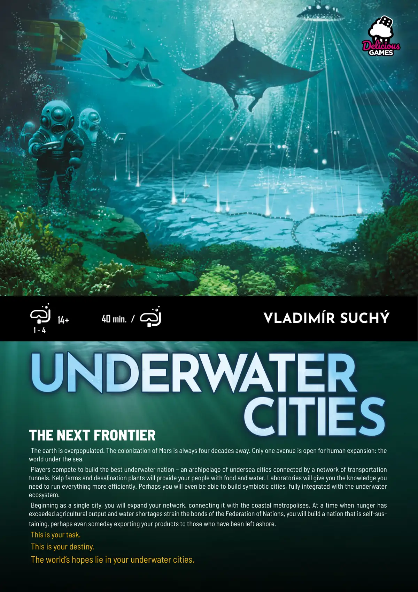
📝 第 1 页 AI 机翻对照（点击展开）
VLADIMÍR SUCHÝ
THE NEXT FRONTIER
地球人口过剩。火星殖民总是遥遥无期。人类扩张只有一条道路：海底世界。
玩家们竞相建造最好的水下国家——一个由交通隧道网络连接的海底城市群。海带农场和海水淡化厂将为你的民众提供食物和水。实验室将给你运行一切所需的知识。也许你甚至能够建造共生城市，与水下生态系统完全融合。
从一个单一城市开始，你将扩展你的网络，将其与沿海大都市连接起来。在饥饿已超过农业产出且水资源短缺使联合国联盟关系紧张的时代，你将建立一个自给自足的国家，也许有一天甚至向那些被留在岸上的人出口你的产品。
这是你的任务。
这是你的命运。
世界的希望寄托在你的水下城市中。
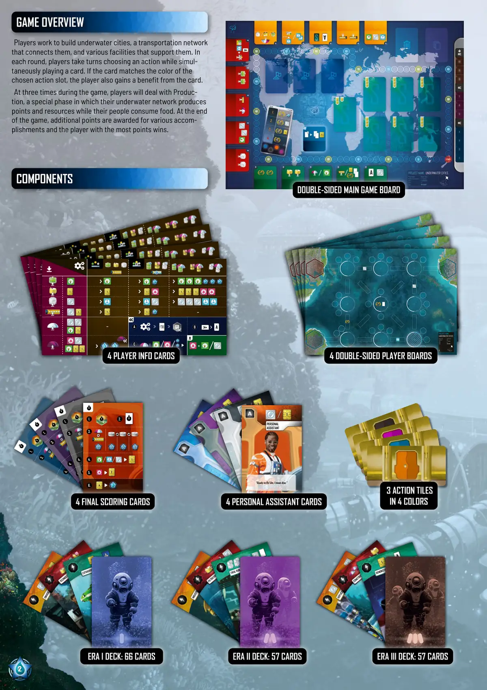
📝 第 2 页 AI 机翻对照（点击展开）
玩家致力于建造水下城市，连接它们的交通网络，以及支持它们的各种设施。在每一轮中，玩家轮流选择一个行动，同时打出一张卡牌。如果卡牌颜色与所选行动槽的颜色匹配，玩家还能从卡牌中获得额外收益。在游戏中的三个时间点，玩家将处理生产阶段，这是一个特殊阶段，此时他们的水下网络会产生分数和资源，而他们的人民会消耗食物。游戏结束时，各种成就将获得额外分数，分数最高的玩家获胜。
4张玩家信息卡
双面主游戏版图
4张双面玩家版图
4张最终计分卡
"让我们谈谈你的小脑袋瓜，人类。"
个人
助手
"现在提供饮料 11101010
加量 1010。"
个人
助手
"是的。精彩的分析。但事实上，一加一并不等于三。"
个人
助手
"准备好起飞！呃，我是说下潜。"
个人
助手
4张个人助手卡
走私
你可以支付1个科学或1个钢塑来升级你的一个海水淡化厂。
技术谈判
你可以支付1个信用点立即执行任何可用槽位中的行动。
特殊任务
第一时代牌库：66张卡牌
工业间谍
每2个相连的海水淡化厂获得1个钢塑。
过滤回收
如果你至少有2个相连的升级实验室，获得1个科学、1个钢塑和1张卡牌。
试运行
第二时代牌库：57张卡牌
如果你至少有3个钢塑，获得1个钢塑。
复制系统测试
如果你至少有5个相连的城市，你可以免费建造一个海水淡化厂。
建设意外之财
你可以支付1个信用点来使用一张或两张你的行动卡。
示范
第三时代牌库：57张卡牌
3个行动板块
4种颜色
游戏概览
游戏组件
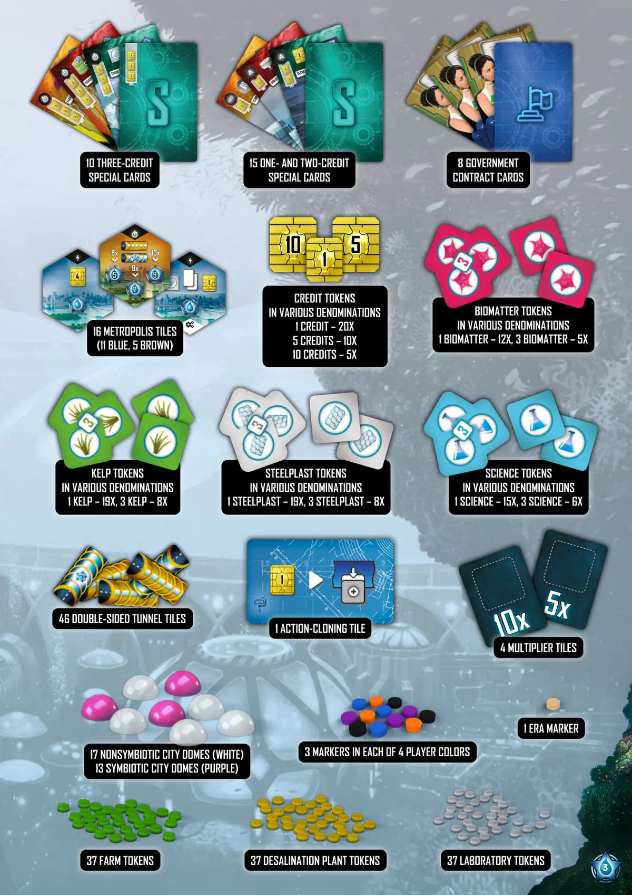
📝 第 3 页 AI 机翻对照（点击展开）
4种玩家颜色各3个指示物
1个时代标记
联邦优先权
9-ENG-print.indd 11
联邦优先权
print.indd 5
23.0
贸易顺差
23.08.2018
每当你的网络连接到一个新的都会，获得2个信用点和2分。
企业扩张
9-ENG-print.indd 43
在任何扩张地点建造任意建筑。
支付常规费用。
建造扩张
print.indd 29
23.0
支付1个信用点来执行任意槽位中的行动。
该行动可能可用或未被你占据。
秘密任务
23.08.2018
10个三信用点
特殊卡牌
15个一和二信用点
特殊卡牌
8张政府
合同卡牌
8x
9x
10x
16个都会板块
(11个蓝色，5个棕色)
1010
各种面值的信用点指示物
1信用点 – 20个
5信用点 – 10个
10信用点 – 5个
各种面值的海带指示物
1海带 – 19个，3海带 – 8个
各种面值的生物质指示物
1生物质 – 12个，3生物质 – 5个
46张双面隧道板块
1个行动复制板块
37个农场指示物
17个非共生城市穹顶（白色）
13个共生城市穹顶（紫色）
37个海水淡化厂指示物
37个实验室指示物
5x
10x
各种面值的科学指示物
1科学 – 15个，3科学 – 6个
各种面值的钢塑指示物
1钢塑 – 19个，3钢塑 – 8个
4个乘法板块
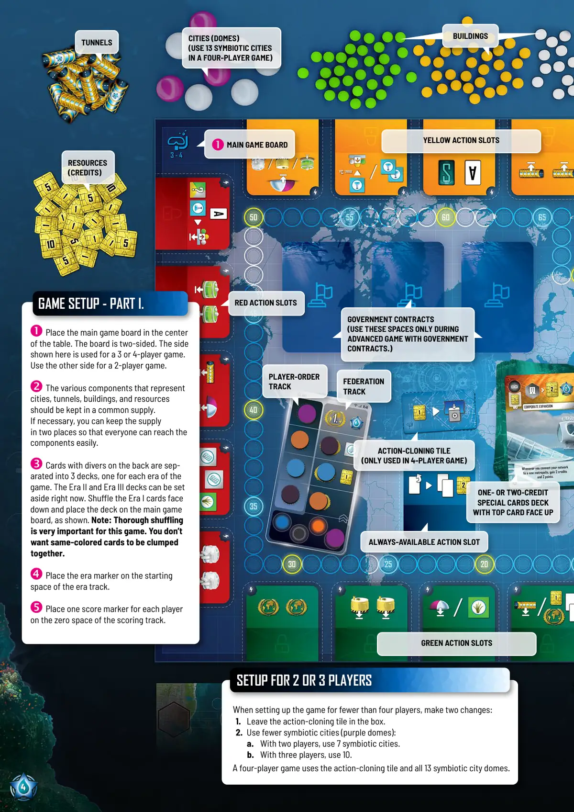
📝 第 4 页 AI 机翻对照（点击展开）
n 主游戏版图
城市（穹顶）
（四人游戏中使用13个共生城市）
建筑
绿色行动槽
政府合同
（仅在带有政府合同的
高级游戏中使用这些区域。）
常用行动槽
黄色行动槽
资源
##（信用点）
隧道
红色行动槽
行为复制板块
##（仅在四人游戏中使用）
一或二信用点
特殊卡牌牌库
顶牌面朝上放置
联盟
轨道
玩家顺序
轨道
当为少于四名玩家设置游戏时，进行两项更改：
- 将行为复制板块留在盒子里。
- 使用较少的共生城市（紫色穹顶）：
a. 两名玩家时，使用7个共生城市。
b. 三名玩家时，使用10个。
四人游戏使用行为复制板块和全部13个共生城市穹顶。
n 将主游戏版图放在桌子中央。
版图是双面的。这里展示的一面用于3人或4人游戏。
另一面用于2人游戏。
o 代表城市、隧道、建筑和资源的各种组件应放在公共供应区。
如有必要，可以将供应区分成两部分，以便每个人都能轻松取用组件。
p 背面有潜水员的卡牌被分成3副牌，分别对应游戏的三个时代。时代二和时代三的牌组可以暂时放在一边。将时代一的牌面朝下洗匀，然后按照图示将牌组放在主游戏版图上。注意：彻底洗牌对本游戏非常重要。你不希望相同颜色的卡牌聚集在一起。
q 将时代标记放在时代轨道的起始格上。
r 为每位玩家放置一个分数标记，放在分数轨道的零格上。
游戏设置 - 第一部分。
2人或3人玩家设置
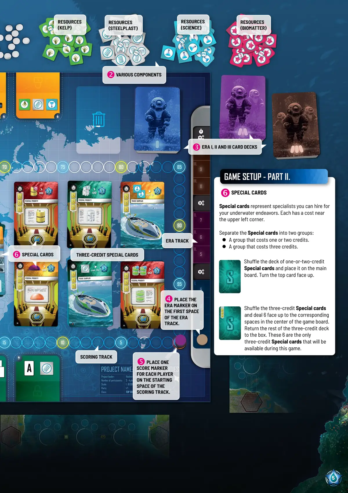
📝 第 5 页 AI 机翻对照（点击展开）
p 时代I、II和III卡牌组
o 各种组件
三点特殊卡牌
计分轨道
资源
(KELP)
资源
(STEELPLAST)
资源
(SCIENCE)
资源
(BIOMATTER)
q 将
时代指示物放置在
时代轨道的
第一个格上。
时代轨道
r 为每位玩家放置一个
计分指示物
在计分轨道的
起始格上。
s 特殊卡牌
s 特殊卡牌
特殊卡牌代表你可以为你的水下事业雇佣的专家。每张卡牌的左上角附近都有一个费用。
将特殊卡牌分成两组：
z 费用为一或两点信用点的卡牌组。
z 费用三点信用点的卡牌组。
洗混一或两点信用点的特殊卡牌组，并将其放置在主游戏板上。将顶部的卡牌面朝上翻开。
洗混三点信用点的特殊卡牌，并向游戏板中央对应的格面朝上发放6张。将剩余的三点信用点卡牌组放回盒中。这6张是本次游戏中唯一可用的三点特殊卡牌。
游戏设置 - 第二部分。
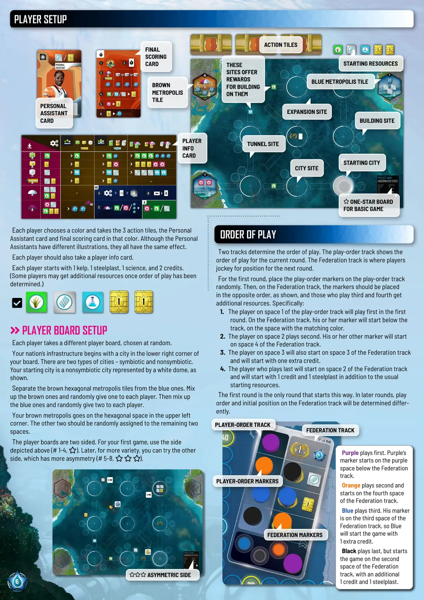
📝 第 6 页 AI 机翻对照（点击展开）
每位玩家选择一种颜色，并拿取对应颜色的3个行动板块、个人助理卡牌和最终计分卡牌。尽管个人助理有不同的插图，但它们都具有相同的效果。
每位玩家还应拿取一张玩家信息卡牌。
每位玩家起始拥有1个海藻、1个钢塑、1个科学和2个信用点。
（一旦确定了行动顺序，部分玩家可能会获得额外资源。）
ą 玩家板块设置
每位玩家随机拿取一个不同的玩家板块。
你的国家基础设施从板块右下角的一座城市开始。有两种类型城市——共生城市和非共生城市。你的起始城市是一座由白色穹顶代表的非共生城市，如图所示。
将棕色六边形大都会板块与蓝色板块分开。将棕色板块混合，随机分给每位玩家一块。然后将蓝色板块混合，随机分给每位玩家两块。
你的棕色大都会板块放在板块左上角的六边形格中。另外两个板块应随机分配到剩余两个格中。
玩家板块是双面的。第一局游戏使用如图所示的一面（编号1-4，）。之后，为了增加变化，你可以尝试另一面，该面具有更多不对称性（编号5-8， ）。
两个轨道决定了行动顺序。行动顺序轨道显示了当前轮的行动顺序。联邦轨道是玩家为下一轮竞争位置的地方。
第一轮，将行动顺序标记随机放置在行动顺序轨道上。然后在联邦轨道上，标记应按相反顺序放置，如图所示，第三和第四行动的玩家将获得额外资源。具体如下：
- 行动顺序轨道上1格的玩家将在第一轮首先行动。在联邦轨道上，他的标记将从轨道下方的对应颜色格开始。
- 行动顺序轨道上2格的玩家第二行动。他的另一个标记将从联邦轨道的4格开始。
- 行动顺序轨道上3格的玩家也将从联邦轨道的3格开始，并额外获得1个信用点。
- 最后行动的玩家将从联邦轨道的2格开始，除常规起始资源外，还将额外获得1个信用点和1个钢塑。
第一轮是唯一这样开始的轮次。在后续轮次中，行动顺序和联邦轨道上的初始位置将以不同方式确定。
玩家设置
行动顺序
紫色玩家首先行动。紫色的标记从联邦轨道下方的紫色格开始。
橙色玩家第二行动，从联邦轨道的第四格开始。
蓝色玩家第三行动。他的标记在联邦轨道的第三格，因此蓝色玩家将游戏开始时额外获得1个信用点。
黑方最后行动，但游戏开始时位于联邦轨道的第二格，额外获得1信用点和1钢塑板。
初始资源
行动板块
隧道地点
城市地点
初始城市
建筑地点
蓝色大都会板块
一星版图
适用于基础游戏
棕色
大都会
板块
扩展地点
个人
助手
卡牌
最终
计分
卡牌
玩家
信息
卡牌
这些
地点提供
建造
奖励
玩家顺序轨道
玩家顺序标记
联邦轨道
联邦标记
非对称面
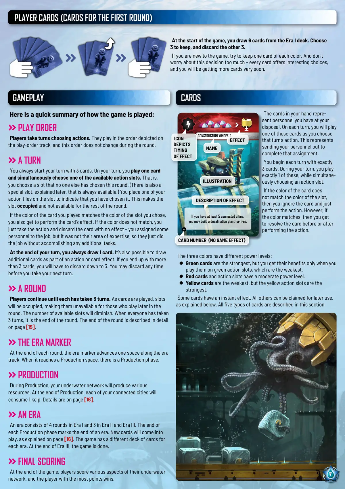
📝 第 7 页 AI 机翻对照（点击展开）
回合顺序
玩家轮流选择行动。他们按照行动顺序轨道上显示的顺序进行游戏，这个顺序在回合期间不会改变。
一个回合
你总是以3张手牌开始你的回合。在你的回合中，你打出一张牌，并同时选择一个可用的行动槽位。也就是说，你选择一个在本回合中还没有被其他玩家选择的槽位。（还有一个特殊的槽位，后面会解释，它总是可用的。）你将你的一个行动板块放在槽位上，表示你已经选择了它。这使得该槽位被占用，在回合的剩余时间内不再可用。
如果你打出的牌的颜色与你选择的槽位颜色相匹配，你还可以执行牌的效果。如果颜色不匹配，你只是获得行动并将牌弃置且没有效果——你派了人员去执行任务，但这不是他们的专业领域，所以他们只是完成了任务而没有完成任何额外任务。
在你的回合结束时，你总是摸1张牌。也可能作为行动或牌效果的一部分摸额外的牌。如果你最终拥有超过3张牌，你必须弃置到3张。你可以在下一次回合开始前的任何时候弃牌。
一个轮
玩家继续进行，直到每个人都完成了3个回合。随着牌被打出，槽位将被占用，使得在回合中较后行动的玩家无法使用它们。可用槽位的数量将减少。当每个人都完成了3个回合时，一轮结束。一轮的结束在[15]页有详细描述。
时代标记
在每轮结束时，时代标记沿着时代轨道前进一格。当它到达一个生产空间时，就会有一个生产阶段。
生产
在生产期间，你的水下网络将产生各种资源。在生产结束时，你每个连接的城市将消耗1张海带。详情在[16]页。
一个时代
一个时代包括：时代I有4轮，时代II和时代III各有3轮。每个生产阶段的结束标志着时代的结束。新牌将进入游戏，如[16]页所述。游戏每个时代都有不同的牌库。在时代III结束时，游戏结束。
最终计分
在游戏结束时，玩家计分他们水下网络的各个方面，得分最高的玩家获胜。
以下是游戏如何进行的快速总结：
你手中的牌代表你可用的
人员。在每个回合中，你将打出
其中一张牌，同时选择该回合的
行动。这代表派遣你的人员去
完成那个任务。
你每个回合开始时正好有
3张牌。在你的回合中，你打出
其中 exactly 1 张，同时选择一个
行动槽位。
如果你打出的牌的颜色与
与槽位颜色不匹配，
那么你忽略该卡牌，仅
执行行动。然而，如果颜色匹配，
你就可以在执行行动之前或之后
解析该卡牌。
三种颜色有不同的能力等级：
z 绿色卡牌最强，但你只有在
绿色行动槽位上打出它们时才能获得其收益，而绿色行动槽位是最弱的。
z 红色卡牌和行动槽位具有中等能力等级。
z 黄色卡牌最弱，但黄色行动槽位是最强的。
有些卡牌具有即时效果。所有其他卡牌可以保留以供日后使用，
如下文所述。本节将描述所有五种类型的卡牌。
游戏进行
游戏开始时，你从时代I牌库中抽取6张卡牌。选择
3张保留，弃掉另外3张。
如果你是新手，尝试保留每种颜色各一张卡牌。不要太担心这个决定——每张卡牌都提供有趣的选择，
而且你很快会获得更多卡牌。
玩家卡牌（第一轮的卡牌）
卡牌
如果你至少有5个相连的城市，
你可以免费建造一个海水淡化厂。
建设暴利
图标
描绘
时机
效果
效果
名称
卡牌编号（无游戏效果）
效果描述
插图
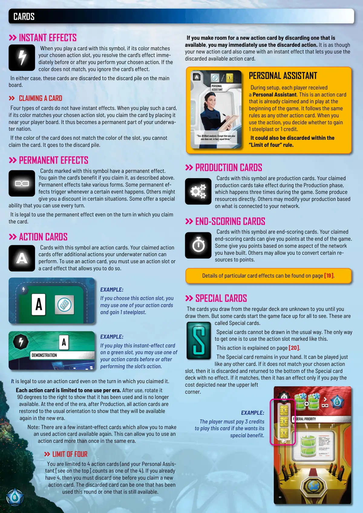
📝 第 8 页 AI 机翻对照（点击展开）
ą 即时效果
当你打出带有此符号的卡牌时，如果其颜色与你选择的行动槽颜色匹配，你可以在执行你选择的行动之前或之后立即解决卡牌的效果。如果颜色不匹配，则忽略卡牌的效果。
在任何情况下，这些卡牌都会被弃置到主版图上的弃牌堆。
ą 声明卡牌
四种类型的卡牌没有即时效果。当你打出这样的卡牌时，如果其颜色与你选择的行动槽颜色匹配，你通过将卡牌放置在你的玩家板附近来声明该卡牌。因此，它成为你水下国家的永久部分。
如果卡牌的颜色与槽的颜色不匹配，你不能声明该卡牌。它进入弃牌堆。
ą 永久效果
带有此符号的卡牌具有永久效果。
如果你如上所述声明了该卡牌，你将获得卡牌的收益。
永久效果有多种形式。一些永久效果在特定事件发生时触发。其他可能在某些情况下给你折扣。一些提供你可以每回合使用的特殊能力。
在你声明卡牌的回合使用永久效果是合法的。
ą 行动卡牌
带有此符号的卡牌是行动卡牌。你声明的行动卡牌为你水下国家可以执行的其他额外行动。要使用行动卡牌，你必须使用允许你这样做的行动槽或卡牌效果。
在你声明行动卡牌的回合使用它是合法的。
每张行动卡牌每个时代限用一次。使用后，将其向右旋转90度以显示它已被使用且不再可用。在每个时代结束时，在生产阶段之后，所有行动卡牌都会恢复到通常方向，以显示它们在新时代将再次可用。
注意：有一些即时效果卡牌允许你使已使用的行动卡牌再次可用。这使你可以在同一时代多次使用行动卡牌。
ą 四张限制
你最多拥有4张行动卡牌（你的个人助理[见顶部]算作4张中的一张）。如果你已经有4张，那么在声明新的行动卡牌之前你必须弃置一张。被弃置的卡牌可以是本回合已使用的一张，或者是仍然可用的一张。
如果你通过弃置一张可用的卡牌为新行动卡牌腾出空间，你可以立即使用被弃置的行动卡牌。就好像你的新行动卡牌也带有一个即时效果，允许你使用被弃置的可用的行动卡牌。
ą 生产卡牌
带有此符号的卡牌是生产卡牌。你声明的生产卡牌在生产阶段生效，该阶段在游戏过程中发生三次。一些直接生产资源。其他可能根据你的生产进行修改
<!--page:N-->
结算卡
带有此符号的卡牌是结算卡。你已认领的结算卡可以在游戏结束时为你提供分数。一些卡牌会根据你建造的网络方面的某些方面给你分数。其他卡牌可能允许你将某些资源转换为分数。
特殊卡
你从常规牌库中摸取的卡牌在摸到之前对你来说是未知的。但有些卡牌在游戏开始时是正面朝上供所有人看到的。这些被称为特殊卡牌。
特殊卡牌不能以通常的方式摸取。获得特殊卡牌的唯一方法是使用标记如下所示的行动槽位。
此行动在第[20]页有解释。
特殊卡牌保留在你的手牌中。它可以像其他任何卡牌一样被使用。如果它与你选择的行动槽位不匹配，则它会被弃置并返回到特殊卡牌牌库的底部，且没有任何效果。如果匹配，则只有当你支付了左上角附近所示的费用时，它才会生效。
示例：
如果玩家想要获得这张卡牌的特殊效果，她必须支付3点信用点。
卡牌
"是的。精彩的分析。但事实上，一加一并不等于三。"
个人
助手
在设置阶段，每位玩家获得一张个人助手。这是一张行动卡牌，在游戏开始时已被认领并处于游戏中。它遵循与其他任何行动卡牌相同的规则。当你使用该行动时，你可以选择获得1个钢塑或1点信用点。
它也可以在"四张上限"规则中被弃置。
个人助手
特定卡牌效果的详细信息可以在第[19]页找到。
联邦优先
演示
示例：
如果你在绿色槽位上使用这张即时效果卡牌，你可以在执行槽位的行动之前或之后使用你的一张行动卡牌。
示例：
如果你选择这个行动槽位，你可以使用你的一张行动卡牌并获得1个钢塑。
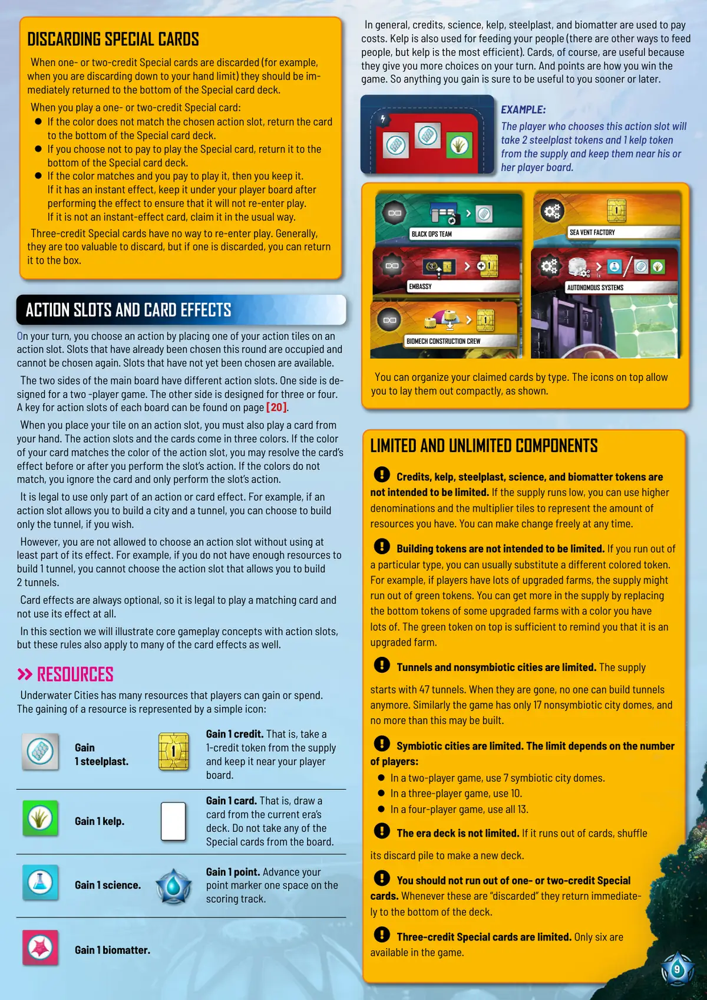
📝 第 9 页 AI 机翻对照（点击展开）
在你的回合，你通过将一张你的行动板块放置在一个行动槽位上来选择一个行动。本轮已被选择的槽位已被占用，不能再次选择。尚未被选择的槽位是可用的。
主板的两面有不同的行动槽位。一面是为两人游戏设计的。另一面是为三或四人游戏设计的。每块板面的行动槽位密钥可以在第[20]页找到。
当你将你的板块放置在行动槽位上时，你也必须从你的手牌中打出一张卡牌。行动槽位和卡牌都有三种颜色。如果你的卡牌颜色与行动槽位颜色匹配，你可以在执行槽位行动之前或之后解决卡牌的效果。如果颜色不匹配，你忽略卡牌，只执行槽位的行动。
只使用行动或卡牌效果的一部分是合法的。例如，如果一个行动槽位允许你建造一个城市和一个隧道，你可以选择只建造隧道，如果你愿意的话。
但是，不允许选择一个行动槽位而不使用其至少一部分的效果。例如，如果你没有足够的资源建造1个隧道，你不能选择允许建造2个隧道的行动槽位。
卡牌效果总是可选的，所以打出一张匹配的卡牌而完全不使用其效果是合法的。
在本节中，我们将用行动槽位来说明核心游戏机制概念，但这些规则也适用于许多卡牌效果。
ą 资源
《水下城市》有许多玩家可以获得或消耗的资源。获得资源用一个简单的图标表示：
一般来说，信用点、科技、海带、钢塑和生物物质用于支付成本。海带也用于喂养你的人民（有其他方式喂养人民，但海带是最有效的）。卡牌当然是有用的，因为它们为你的回合提供了更多选择。而分数就是你赢得游戏的方式。所以你获得的任何东西迟早都会对你有用。
示例：
选择此行动槽位的玩家将从供应区获取2个钢塑指示物和1个海带指示物，并将其保存在其玩家板附近。
获得1个钢塑。
获得1个信用点。也就是说，从供应区取一个1信用点指示物，并将其保存在你的玩家板附近。
获得1个海带。
获得1张卡牌。也就是说，从当前时代的牌库中摸一张牌。不要从版面上取任何特殊卡牌。
获得1个科技。
获得1分。在你的计分轨道上前进一格。
获得1个生物物质。
黑色行动小组
海洋工厂
大使馆
自治系统
生物机械建设队
有限与无限组件
信用点、海带、钢塑、科技和生物物质指示物不打算设限。如果供应不足，你可以使用更高
使用面额指示物和乘法板块来表示你拥有的资源数量。你可以随时自由找零。
建筑指示物不打算设置数量限制。如果你用完某种特定类型，通常可以用不同颜色的指示物替代。例如，如果玩家有很多升级过的农场，绿色指示物可能会供应不足。你可以通过用你有大量库存的颜色替换一些升级农场底部的指示物来补充供应。顶部的绿色指示物足以提醒你这是一个升级过的农场。
隧道和非共生城市是有限的。供应开始时有47个隧道。当它们用完时，没有人再能建造隧道。同样，游戏只有17个非共生城市穹顶，最多只能建造这么多。
共生城市是有限的。限制取决于玩家数量：
z 在两人游戏中，使用7个共生城市穹顶。
z 在三人游戏中，使用10个。
z 在四人游戏中，使用全部13个。
时代牌库是无限的。如果它用完了牌，将其弃牌堆洗牌组成一个新的牌库。
你不应该用完一或二点数的特殊牌。每当这些牌被"弃置"时，它们会立即返回到牌库底部。
三点数的特殊牌是有限的。游戏中只有六张可用。
你可以按类型整理你获得的卡牌。顶部的图标让你可以紧凑地摆放它们，如图所示。
行动槽位与卡牌效果
弃置特殊牌
当一或二点数的特殊牌被弃置时（例如，当你弃置到手牌上限时），它们应立即返回到特殊牌牌库底部。
当你打出一张一或二点数的特殊牌时：
z 如果颜色不匹配所选的行动槽位，将卡牌返回到特殊牌牌库底部。
z 如果你选择不支付费用来打出特殊牌，将其返回到特殊牌牌库底部。
z 如果颜色匹配并且你支付费用打出它，那么你可以保留它。
如果它有即时效果，在执行效果后将它保留在你的玩家板下方，以确保它不会重新进入游戏。
如果它不是即时效果卡牌，按常规方式获得它。
三点数的特殊牌没有重新进入游戏的方式。通常来说，它们太有价值而不会被弃置，但如果有一张被弃置，你可以将其放回盒中。
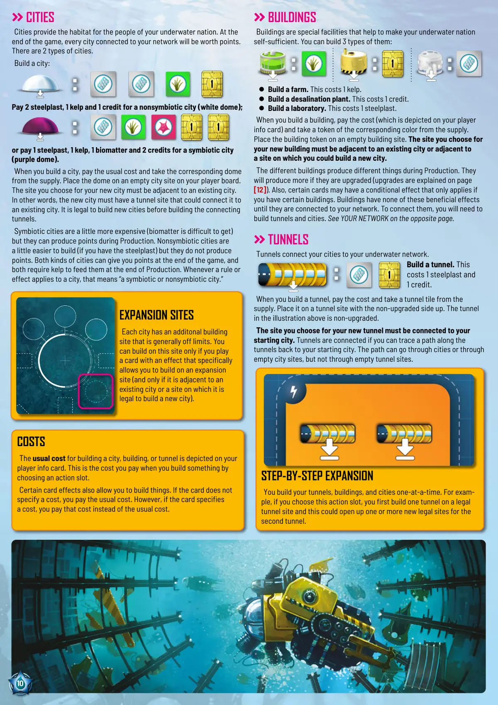
📝 第 10 页 AI 机翻对照（点击展开）
城市
城市为你的水下民族提供栖息地。在游戏结束时，每个连接到你网络的城市场所都会获得分数。
有2种类型的城市。
建造城市：
支付2个钢塑、1个海藻和1个信用点来建造一个非共生城市（白色穹顶）；
或者支付1个钢塑、1个海藻、1个生物质和2个信用点来建造一个共生城市（紫色穹顶）。
当你建造城市时，支付常规费用并从供应区中取出相应的穹顶。将穹顶放置在你的玩家版图上的一个空城市场所。
你为新城市选择的场所必须与现有城市相邻。换句话说，新城市必须有一个隧道场所，可以将其与现有城市连接起来。在建造连接隧道之前建造新城市是合法的。
共生城市成本稍高（生物质难以获取），但它们可以在生产阶段产生分数。非共生城市更容易建造（如果你有钢塑），但它们不产生分数。两种类型的城市在游戏结束时都可以给你分数，并且两者都需要在生产阶段结束时用海藻喂养它们。当任何规则或效果适用于城市时，这意味着"共生或非共生城市"。
建筑
建筑是帮助你的水下民族自给自足的特殊设施。你可以建造3种类型的建筑：
• 建造一个农场。这需要1个海藻。
• 建造一个海水淡化厂。这需要1个信用点。
• 建造一个实验室。这需要1个钢塑。
当你建造建筑时，支付费用（显示在你的玩家信息卡上）并从供应区中取出相应颜色的指示物。将建筑指示物放置在一个空的建筑场所上。你为新建筑选择的场所必须与现有城市相邻，或者与你可以建造新建筑的场所相邻。
不同的建筑在生产阶段会产生不同的东西。如果它们被升级（升级在第[12]页解释），它们会产生更多。此外，某些卡牌可能有条件效果，仅在你拥有特定建筑时适用。建筑在被连接到你的网络之前不会获得这些有益效果。要连接它们，你需要建造隧道和城市。请参阅对面页面的你的网络。
隧道
隧道将你的城市连接到你的水下网络。
建造一条隧道。这需要
1个钢塑和1个信用点。
当你建造隧道时，支付费用并从供应区中取出一个板块。将其放置在隧道场所上，未升级的一面朝上。上图中的隧道是未升级的。
你为新隧道选择的场所必须连接到你的起始城市。如果你可以沿着隧道追溯一条路径回到你的起始城市，那么这些隧道就是连接的。这条路径可以穿过城市或穿过
分步扩展
你一次只能建造一条隧道、一座建筑或一个城市。例如，如果你选择这个行动槽位，你首先在一个合法的隧道位置建造一条隧道，这可能会为一个或多个新的隧道位置打开合法建造的机会。
费用
建造城市、建筑或隧道的常规费用显示在你的玩家信息卡上。这是你通过选择行动槽位建造时需要支付的费用。
某些卡牌效果也允许你建造物品。如果卡牌没有指定费用，你支付常规费用。但是，如果卡牌指定了费用，你则支付该费用而非常规费用。
扩展位置
每个城市都有一个额外的建筑位置，通常这个位置是禁止建造的。只有当你打出具有特定效果的卡牌允许你在扩展位置上建造时（并且该位置必须与现有城市或可以合法建造新城市的位置相邻），你才能在这个位置上建造。
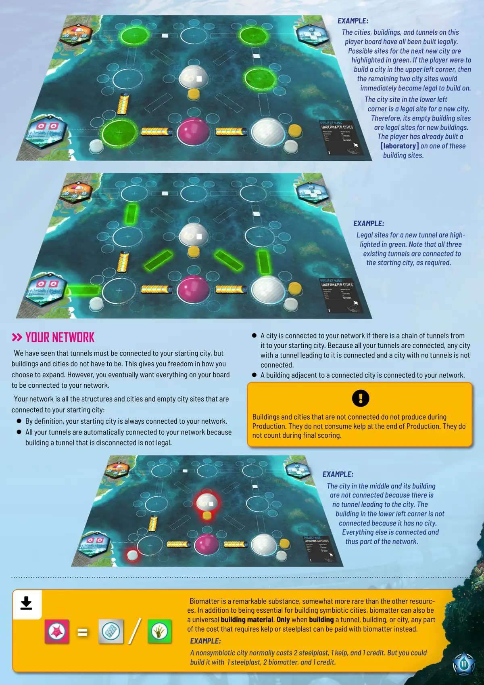
📝 第 11 页 AI 机翻对照（点击展开）
示例：
此玩家版图上的城市、建筑和隧道都已合法建造。
下一个新城市的可能建造位置以绿色高亮显示。如果玩家要在左上角建造一个城市，那么剩下的两个城市位置将立即变得可以合法建造。
左下角的城市位置是一个新城市的合法建造位置。
因此，其空的建筑位置是新建筑的合法建造位置。
玩家已经在这些建筑位置中的一个建造了[实验室]。
示例：
新隧道的合法建造位置以绿色高亮显示。请注意，所有三条现有隧道都按要求连接到了起始城市。
示例：
中间的城市及其建筑没有连接，因为没有通往该城市的隧道。左下角的建筑没有连接，因为它没有城市。其他所有东西都是连接的，因此是网络的一部分。
你的网络
我们已经知道隧道必须连接到你的起始城市，但建筑和城市不必连接。这给了你如何选择扩展的自由度。然而，你最终希望版图上的一切都连接到你的网络。
你的网络是所有连接到你的起始城市的结构、城市和空的城市位置：
z 根据定义，你的起始城市总是连接到你的网络。
z 你所有的隧道都自动连接到你的网络，因为建造不连接的隧道是不合法的。
z 如果有一条从城市到起始城市的隧道链，则该城市连接到你的网络。因为你的所有隧道都是连接的，任何有隧道通往它的城市都是连接的，而没有隧道则不连接。
z 与连接的城市相邻的建筑连接到你的网络。
未连接的建筑和城市在生产阶段不会产生。它们在生产结束时不会消耗海藻。它们在最终计分时不计入。
生物质是一种非凡的物质，比其他资源稍微稀有一些。除了对于建造共生城市必不可少外，生物质也可以作为通用建筑材料。只有在建造隧道、建筑或城市时，任何需要海藻或钢塑的成本部分都可以用生物质代替支付。
示例：
一个非共生城市通常需要2钢塑、1海藻和1信用点。但你可以用1钢塑、2生物质和1信用点来建造它。
=
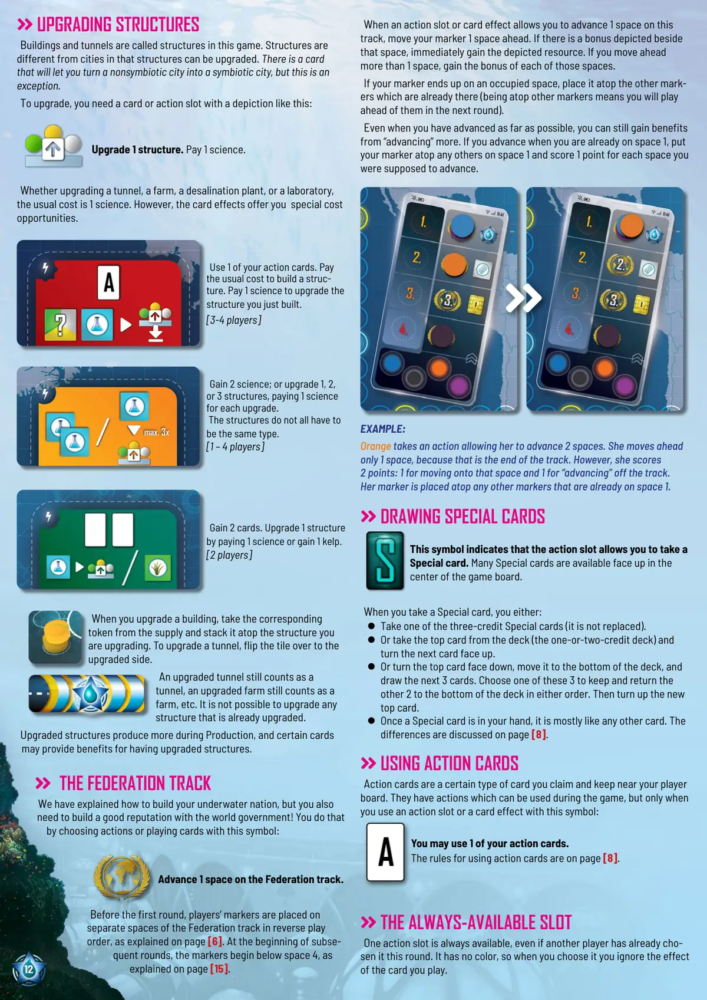
📝 第 12 页 AI 机翻对照（点击展开）
升级建筑
建筑和隧道在本游戏中被称为结构。结构与城市的不同之处在于结构可以升级。有一张卡牌可以让你将非共生城市转变为共生城市，但这是一个例外。
要升级，你需要一张带有如下图示的卡牌或行动槽：
无论是升级隧道、农场、海水淡化厂还是实验室，通常的成本是1点科学。然而，卡牌效果会为你提供特殊的成本机会。
当你升级建筑时，从供应区中取出相应的指示物，并将其堆叠在你正在升级的结构上。要升级隧道，将板块翻到升级面。
升级后的隧道仍然算作隧道，升级后的农场仍然算作农场，以此类推。不可能升级任何已经升级过的结构。
升级后的结构在生产阶段会产生更多产出，并且某些卡牌可能会因拥有升级结构而提供额外收益。
联邦轨道
我们已经解释了如何构建你的水下国家，但你还需要与世界政府建立良好的声誉！通过选择带有如下符号的行动或打出卡牌来实现：
在联邦轨道上前进1格。
在第一轮之前，玩家的标记按照反向游戏顺序放置在联邦轨道的不同格上，如第[6]页所述。在后续轮次的开始，标记从第4格下方开始，如第[15]页所述。
当行动槽或卡牌效果允许你在该轨道上前进1格时，将你的标记向前移动1格。如果该格旁边有奖励图示，立即获得所显示的资源。如果你前进超过1格，则获得每个经过格的奖励。
如果你的标记最终停留在已被占用的格上，将其放置在其他已经存在的标记之上（位于其他标记之上意味着你将在下一轮中先于他们行动）。
即使你已经尽可能前进，你仍然可以从"前进"更多中获得收益。当你已经在第1格时前进，将你的标记放置在第1格上其他任何标记之上，并根据你本应前进的格数获得1分。
示例：
橙色玩家执行了一个允许她前进2格的行动。她只前进了1格，因为那是轨道的尽头。然而，她获得了2分：1分是移动到该格的分数，1分是"前进"出轨道的分数。她的标记被放置在第1格上其他任何已经存在的标记之上。
抽取特殊卡牌
这个符号表示该行动槽允许你抽取一张特殊卡牌。许多特殊卡牌正面朝上放置在游戏版图中央。
当你抽取特殊卡牌时，你可以选择：
z 抽取一张三点信用特殊卡牌（该卡牌不会被替换）。
z 或者从牌库（一或二点信用牌库）顶拿一张牌，并将下一张牌翻面。
z 或者将顶牌翻面，将其移至牌库底部，然后摸取接下来的3张牌。从这3张中选择一张保留，其余两张以任意顺序返回牌库底部。然后将新的顶牌翻面。
z 一旦特殊卡牌进入你的手牌，它基本上就像其他任何卡牌一样。不同之处在第[8]页讨论。
ą 使用行动卡牌
行动卡牌是你声明并保留在玩家版图附近的一种特定类型的卡牌。它们可以在游戏过程中使用行动，但仅当你使用带有此符号的行动槽或卡牌效果时：
你可以使用一张你的行动卡牌。
使用行动卡牌的规则在第[8]页。
ą 始终可用的槽位
一个行动槽位始终可用，即使其他玩家在本轮已经选择了它。它没有颜色，因此当你选择它时，你忽略你所打出的卡牌的效果。
升级1个结构。支付1点科学。
使用1张你的行动卡牌。支付通常费用来建造一个结构。支付1点科学来升级你刚刚建造的结构。
[3-4名玩家]
获得2点科学；或升级1、2或3个结构，每个升级支付1点科学。
这些结构不必是相同类型。
[1 – 4名玩家]
获得2张卡牌。通过支付1点科学来升级1个结构，或获得1点海藻。
[2名玩家]
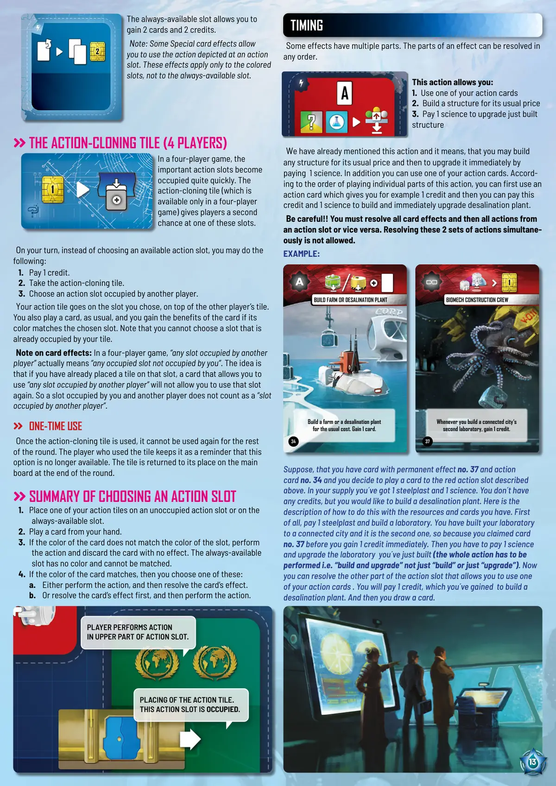
📝 第 13 页 AI 机翻对照（点击展开）
永久可用槽位允许你获得2张卡牌和2个信用点。
注意：一些特殊卡牌效果允许你使用行动槽位上 depicted 的行动。这些效果仅适用于彩色槽位，不适用于永久可用槽位。
ą 行动复制板块（4人游戏）
在四人游戏中，重要的行动槽位会很快被占据。行动复制板块（仅在四人游戏中可用）给玩家在这些槽位上第二次机会的机会。
在你的回合，你可以选择一个可用的行动槽位，也可以执行以下操作：
- 支付1个信用点。
- 拿取行动复制板块。
- 选择一个被其他玩家占据的行动槽位。
你的行动板块会放在你选择的槽位上，位于其他玩家的板块之上。
你通常也会打一张牌，如果牌的颜色与所选槽位匹配，你将获得该牌的收益。注意，你不能选择已被你的板块占据的槽位。
关于卡牌效果：在四人游戏中，"任何被其他玩家占据的槽位"实际上是指"任何被占据的槽位，只要不是被你占据的"。理念是，如果你已经将板块放在那个槽位上，允许你使用"任何被其他玩家占据的槽位"的卡牌将不允许你再次使用该槽位。因此，被你和其他玩家共同占据的槽位不算是"被其他玩家占据的槽位"。
ą 一次性使用
一旦行动复制板块被使用，在本轮余下的时间内就不能再次使用。使用该板块的玩家保留它作为该选项不再可用的提醒。板块在回合结束时返回到主版图上的原位。
ą 选择行动槽位总结
- 将你的一个行动板块放在一个未被占据的行动槽位或永久可用槽位上。
- 从你的手牌中打一张牌。
- 如果牌的颜色与槽位颜色不匹配，执行行动并将牌弃置，无效果。永久可用槽位没有颜色，无法匹配。
- 如果牌的颜色匹配，则选择以下一种：
a. 执行行动，然后解决卡牌的效果。
b. 先解决卡牌的效果，然后执行行动。
一些效果有多个部分。效果的部分可以按任何顺序解决。
这个行动允许你：
1. 使用你的一张行动牌
2. 以通常价格建造一个结构
- 支付1个科学点来升级刚刚建造的结构
我们已经提到过这个行动，它意味着你可以以通常价格建造任何结构，然后通过支付1个科学点立即升级它。此外，你可以使用你的一张行动牌。根据执行此行动各部分的顺序，你可以先使用一张行动牌，然后
一张行动卡，例如给你1点信用点，然后你可以支付这1点信用点和1点科学来建造并立即升级海水淡化厂。
小心！！你必须先解决所有卡牌效果，然后解决行动槽中的所有行动，或者反之亦然。不允许同时解决这两组行动。
示例：
假设你拥有永久效果卡牌37号和行动卡牌34号，并且你决定将一张牌放入上述红色行动槽。在你的资源中，你有1个钢塑和1点科学。你没有信用点，但你想建造一个海水淡化厂。以下是使用你拥有的资源和卡牌如何做到这一点的描述。首先，支付1个钢塑并建造一个实验室。你将实验室建造在相连的城市上，这是第二个实验室，因为你在之前获得了卡牌37号，所以你立即获得1点信用点。然后你必须支付1点科学并升级你刚刚建造的实验室（整个行动必须执行，即"建造并升级"，而不仅仅是"建造"或仅仅是"升级"）。现在你可以解决行动槽的另一部分，该部分允许你使用你的一张行动卡。你将支付1点信用点（你刚刚获得的信用点）来建造一个海水淡化厂。然后你抽一张牌。
时序
以通常成本建造农场或海水淡化厂。获得1张卡牌。
建造农场或海水淡化厂
每当建造相连城市的第二个实验室时，获得1点信用点。
生物机械建筑队
行动板块的放置。
此行动槽已被占用。
玩家执行行动
在行动槽的上半部分。
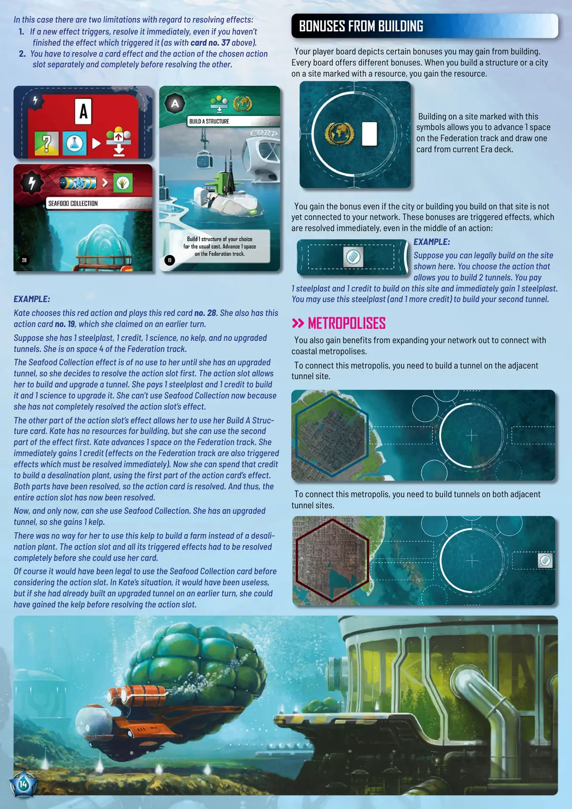
📝 第 14 页 AI 机翻对照（点击展开）
在这种情况下，关于解决效果有两个限制：
- 如果有新效果触发，请立即解决它，即使你尚未完成触发了它的效果（如上文第37号卡牌的情况）。
- 在解决其他效果之前，你必须分别且完整地解决一张卡牌的效果和所选行动槽的行动。
示例：
凯特选择这个红色行动并打出这张红色28号卡牌。她还拥有这张19号行动卡牌，这是她在之前回合中获得的。
假设她有1个钢塑、1个信用点、1个科学点、没有海带，也没有升级隧道。她在联邦轨道的第4格。
海鲜收集效果对她来说直到拥有升级隧道前都无用，因此她决定先解决行动槽的效果。该行动槽允许她建造和升级一条隧道。她支付1个钢塑和1个信用点来建造它，支付1个科学点来升级它。她现在不能使用海鲜收集，因为她尚未完全解决行动槽的效果。
行动槽效果的另一部分允许她使用她的建造结构卡牌。凯特没有建造所需的资源，但她可以先使用效果的第二部分。凯特在联邦轨道上前进1格。她立即获得1个信用点（联邦轨道上的效果也是必须立即解决的触发效果）。现在她可以使用该信用点来建造一个海水淡化厂，使用行动卡效果的第一部分。两部分都已解决，因此行动卡已解决。于是，整个行动槽现已解决。
现在，也只有在现在，她才能使用海鲜收集。她有一条升级隧道，因此她获得1个海带。
她无法使用这个海带来建造农场而不是海水淡化厂。行动槽及其所有触发效果必须完全解决后，她才能使用自己的卡牌。
当然，在考虑行动槽之前使用海鲜收集卡牌也是合法的。在凯特的情况下，这会是无用的，但如果她在之前的回合中已经建造了一条升级隧道，她可以在解决行动槽之前获得海带。
你的玩家版图描绘了你可能通过建造获得的某些奖励。
每个版图提供不同的奖励。当你在标有资源的地点建造结构或城市时，你获得该资源。
在标有此符号的地点建造允许你在联邦轨道上前进1格并从当前时代牌库中抽一张牌。
即使你在该地点建造的城市或建筑尚未连接到你的网络，你也能获得这些奖励。这些是触发效果，即使在行动过程中也必须立即解决：
示例：
假设你可以合法地在该地点建造
如上所示。你选择能够建造2条隧道的行动。你支付1个钢铁塑料和1个信用点来建造这个站点，并立即获得1个钢铁塑料。你可以使用这个钢铁塑料（再加1个信用点）来建造你的第二条隧道。
ą 大都会
你还可以通过扩展网络连接到大都会而获得收益。
要连接这个大都会，你需要在相邻的隧道站点上建造一条隧道。
要连接这个大都会，你需要在两个相邻的隧道站点上都建造隧道。
建造奖励
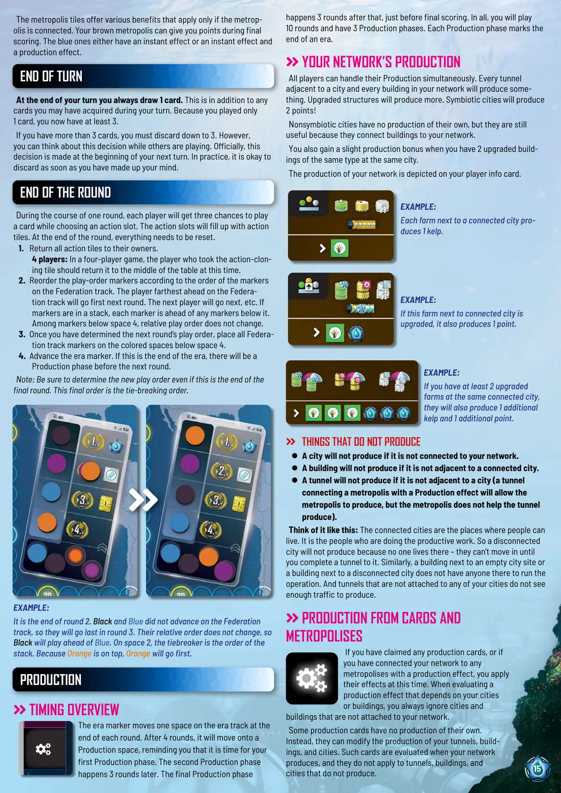
📝 第 15 页 AI 机翻对照（点击展开）
都会板块提供各种好处，但这些好处仅在都会连接时才生效。你的棕色都会可以在最终计分时给你分数。蓝色要么有即时效果，要么有即时效果和生产效果。
在你的回合结束时，你总是摸1张牌。这是除了你在回合中可能获得的任何牌之外的额外牌。因为你只打了1张牌，所以现在你至少有3张牌。
如果你有超过3张牌，你必须弃牌至3张。然而，你可以在其他人游戏时考虑这个决定。正式来说，这个决定是在你的下一个回合开始时做出的。实际上，一旦你下定决心，就可以立即弃牌。
在一轮过程中，每位玩家在选择行动槽时将有三次机会打出卡牌。行动槽将被行动板块填满。在回合结束时，一切都需要重置。
- 将所有行动板块归还给它们的所有者。
4人游戏：在四人游戏中，拿了行动复制板块的玩家此时应将其放回桌子中央。
- 根据联邦轨道上标记的顺序重新排列游戏顺序标记。在联邦轨道上领先的玩家将在下一轮先行动。下一个玩家接着行动，以此类推。如果标记堆叠在一起，每个标记都位于其下方任何标记的前面。在4号区域下方的标记中，相对游戏顺序不变。
- 一旦确定了下一轮的游戏顺序，将所有联邦轨道标记放在4号区域下方的彩色区域上。
- 推进时代标记。如果这是时代结束，下一轮之前将有一个生产阶段。
注意：即使这是最后一轮，也要确保确定新的游戏顺序。这个最终顺序是决胜顺序。
示例：
现在是第2轮结束。黑色和蓝色玩家没有在联邦轨道上前进，所以他们将在第3轮最后行动。他们的相对顺序不变，所以黑色玩家将在蓝色玩家之前行动。在2号区域，决胜顺序是堆叠的顺序。因为橙色在顶部，所以橙色玩家将先行动。
ą 时间概览
时代标记在每个回合结束时在时代轨道上前进一格。经过4轮后，它将移动到一个生产区域，提醒你该进行你的第一个生产阶段了。第二个生产阶段在3轮后发生。最后一个生产阶段在再过3轮后发生，就在最终计分之前。总共，你将进行10轮游戏，并有3个生产阶段。每个生产阶段标志着时代的结束。
ą 你的网络的生产
所有玩家可以同时处理他们的生产。每条相邻于城市的隧道以及你网络中的每栋建筑都将产生一些
生产
升级后的建筑将产生更多。共生城市将产生 2 分！
非共生城市没有自己的生产能力，但它们仍然有用，因为它们将建筑连接到你的网络中。
当你在同一个城市拥有 2 个相同类型的升级建筑时，你还会获得轻微的生产加成。
你的网络产量显示在你的玩家信息卡上。
不产生生产的情况
城市如果没有连接到你的网络，则不会产生生产。
建筑如果没有与已连接的城市相邻，则不会产生生产。
隧道如果没有与城市相邻，则不会产生生产（连接具有生产效果的大都市的隧道将允许该大都市产生生产，但大都市不会帮助隧道产生）。
可以这样想：已连接的城市是人们可以居住的地方。是人们在从事生产工作。因此，一个未连接的城市不会产生生产，因为没有人居住在那里——在你完成通往它的隧道之前，人们无法搬入。同样，空城市站点旁边的建筑或未连接城市旁边的建筑没有人在那里运营操作。而没有连接到你任何城市的隧道看不到足够的交通流量来产生生产。
来自卡牌和大都市的生产
如果你声明了任何生产卡牌，或者将你的网络连接到任何具有生产效果的大都市，你此时应用它们的效果。在评估依赖于你的城市或建筑的生产效果时，你总是忽略未连接到你的网络的城市和建筑。
一些生产卡牌没有自己的生产。相反，它们可以修改你的隧道、建筑和城市的生产。此类卡牌在你的网络产生生产时进行评估，它们不适用于不产生生产的隧道、建筑和城市。
回合结束
轮次结束
生产
示例：
每个与已连接城市相邻的农场生产 1 海藻。
示例：
如果这个与已连接城市相邻的农场被升级，它还会额外产生 1 分。
示例：
如果你在同一个已连接城市拥有至少 2 个升级的农场，它们还将额外产生 1 海藻和 1 分。
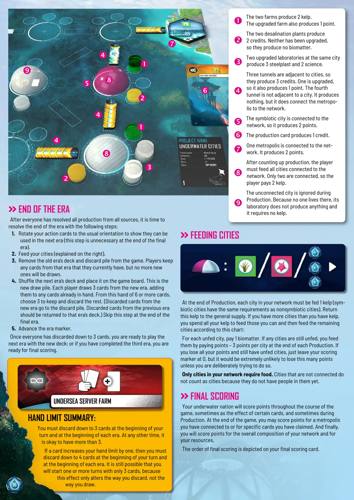
📝 第 16 页 AI 机翻对照（点击展开）
ą 喂养城市
在生产阶段结束时，你网络中的每个城市必须喂养1份海带（共生城市的要求与非共生城市相同）。将这份海带返还到公共供应区。如果你的城市数量多于海带数量，你将使用所有的海带来喂养尽可能多的城市，然后根据下表喂养剩余的城市：
对于每个未被喂养的城市，支付1点生物质。如果仍有城市未被喂养，你通过支付分数来喂养它们——在每个生产阶段结束时，每个城市支付3分。如果你失去了所有分数且仍有城市未被喂养，只需将你的记分标记留在0分，但除非你刻意这样做，否则极不可能失去这么多分数。
只有你网络中的城市需要食物。未连接的城市不算作城市，因为它们还没有人居住。
ą 最终计分
在你的水下国家中，你将在游戏过程中获得分数，有时是某些卡牌的效果，有时是在生产阶段。在游戏结束时，你可以为你连接到的大都市计分，或者为你获得的特定卡牌计分。最后，你将根据你网络的整体构成和你的资源获得分数。
最终计分的顺序显示在你的最终计分卡上。
ą 时代结束
在所有人都解决了所有来源的生产后，是时候通过以下步骤解决时代结束：
- 将你的行动卡旋转到常规方向，以显示它们可以在下一个时代使用（在最后一个时代结束时，此步骤无需执行）。
- 喂养你的城市（右侧有说明）。
- 将旧时代的牌库和弃牌堆从游戏中移除。玩家保留他们当前拥有的那个时代的任何卡牌，但不会再抽取新的卡牌。
- 洗混下一个时代的牌库并将其放在游戏板上。这是新的抽牌堆。每个玩家从新时代抽取3张卡牌，添加到手中已有的任何卡牌中。从这手6张或更多的牌中，选择3张保留，其余的弃掉。（新时代的弃牌进入弃牌堆。上一个时代的弃牌应返回到那个时代的牌库。）在最后一个时代结束时，跳过此步骤。
- 推进时代标记标记。
当所有人都弃牌至3张牌时，你就可以用新的牌库开始下一个时代的游戏；或者如果你已经完成了第三个时代，你就可以进行最终计分。
手牌限制总结：
在你的回合开始时和每个时代开始时，你必须弃牌至3张牌。在其他任何时候，拥有超过3张牌是可以的。
如果一张卡牌使你的手牌限制增加1，那么在你的回合开始时和每个时代开始时，你必须弃牌至4张牌。你仍然有可能
将开始一个或多个回合，只有3张牌，因为
这个效果只改变你弃牌的方式，而不是你摸牌的方式。
海底服务器农场
n
n
o
o
p
q
q
q
r
s
t
u
u
v
两个农场生产2海带。
升级后的农场还生产1分。
两个海水淡化厂生产
2 点数。两者都未升级，
因此它们不生产生物质。
同一城市中的两个升级实验室生产3钢塑和2科学。
三条隧道与城市相邻，因此它们生产3点数。其中一条已升级，所以它还生产1分。第四条隧道不与任何城市相邻。它不生产任何东西，但它确实将大都市连接到了网络。
共生城市已连接到网络，因此它生产2分。
生产卡牌生产1点数。
一个大都市已连接到网络。它生产2分。
计算完产量后，玩家必须为所有连接到网络的城市提供食物。只有两个城市已连接，因此玩家支付2海带。
未连接的城市在生产阶段被忽略。因为没有人居住在那里，它的实验室不生产任何东西，也不需要海带。
n
o
p
q
r
s
t
u
v
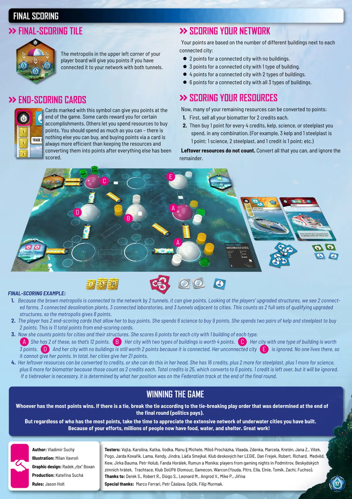
📝 第 17 页 AI 机翻对照（点击展开）
测试者：Vojta, Karolína, Katka, Vodka, Manu § Michele, Miloš Procházka, Vlaada, Zdenka, Marcela, Kretén, Jana Z., Vítek,
Pogo, Jarda Kovařík, Lama, Kendy, Jindra, Láďa Smejkal, Klub deskových her LEGIE, Dan Frejek, Robert, Richard, Medvěd,
Kew, Jirka Bauma, Petr Holub, Fanda Horálek, Rumun a Monika；来自 Podmitrov、Beskydských zimních hrátek、Trachtace、Klub DoUPě Olomouc、Gamecon、Warcon (Youda, Pítrs, Ella, Elnie, Tomík, Zachi, Fuchso) 游戏之夜的玩家。
感谢：Derek S., Robert R., Diogo S., Leonard M., Angrod V., Mike P., Jiřina
特别感谢：Marco Ferrari, Petr Čáslava, Opčík, Filip Murmak.
ą 最终计分板块
你玩家版图左上角的大都市如果通过两条隧道连接到你的网络，将为你提供分数。
ą 最终计分卡牌
交易 S
标记有此符号的卡牌可以在游戏结束时为你提供分数。一些卡牌会因特定成就而奖励你。其他卡牌允许你花费资源来购买分数。你应该尽可能多地花费——因为没有什么其他可以购买的，而且通过卡牌购买分数总是比保留资源并在其他所有内容计分后将其转换为分数更有效率。
ą 计分你的网络
你的分数基于每个已连接城市周围的不同建筑数量：
z 没有建筑的已连接城市得 2 分。
z 有 1 种建筑的已连接城市得 3 分。
z 有 2 种建筑的已连接城市得 4 分。
z 有全部 3 种建筑的已连接城市得 6 分。
ą 计分你的资源
现在，你剩余的许多资源可以转换为分数：
- 首先，将你的所有生物质以每个 2 信用点出售。
- 然后，每花费 4 个信用点、海带、科学或钢塑中的任意组合，购买 1 分。（例如，3 海带和 1 钢塑是 1 分；1 科学、2 钢塑和 1 信用点是 1 分；等等）
剩余资源不计分。尽可能多地转换所有资源，忽略剩余部分。
赢得游戏
whoever has the most points wins. If there is a tie, break the tie according to the tie-breaking play order that was determined at the end of
the final round (politics pays).
But regardless of who has the most points, take the time to appreciate the extensive network of underwater cities you have built.
Because of your efforts, millions of people now have food, water, and shelter. Great work!
作者：Vladimír Suchý
插画：Milan Vavroň
平面设计：Radek "rbx" Boxan
制作：Kateřina Suchá
规则：Jason Holt
最终计分
最终计分示例：
- 由于棕色大都市通过两条隧道连接到网络，它可以提供分数。查看玩家升级的结构，我们看到 2 个连接-
- 玩家有2张终局计分卡，允许她购买分数。她花费6点科学来购买9分。她花费两对海藻和钢塑来购买2分。这些来自终局计分卡的总分是11分。
- 现在她计算城市及其结构的分数。每个拥有1种每种类型建筑的城市她得6分。
A
她有2个这样的城市，所以是12分。B
她拥有两种类型建筑的城市值4分。C
她拥有一种类型建筑的城市值3分。D
而她没有建筑的城市仍然值2分，因为它是连通的。她未连通的城市E
被忽略。没有人住在那里，所以它不能给她分数。总共，她的城市给她21分。
- 她剩余的资源可以转换为信用点，或者她可以在脑中计算。她有16信用点，加上钢塑的2点，加上科学的1点，加上生物质的6点（因为每点生物质算作2信用点）。总信用点是25，转换为6分。剩下1信用点，但将被忽略。
如果需要决胜条件，则根据她在最后一轮结束时在联邦轨道上的位置决定。
A
A
E
D
B
C
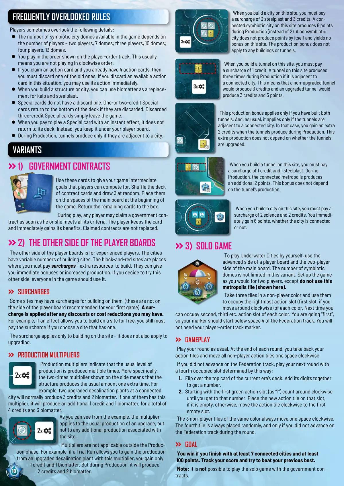
📝 第 18 页 AI 机翻对照（点击展开）
玩家有时会忽略以下细节：
z 游戏中共生的城市穹顶数量取决于玩家数量——两名玩家，7个穹顶；三名玩家，10个穹顶；四名玩家，13个穹顶。
z 你按照玩家顺序轨道上显示的顺序进行游戏。这通常意味着你不是按顺时针顺序进行游戏。
z 如果你获取一张行动牌，而你已经有4张行动牌，那么你必须丢弃其中一张旧牌。如果你在这种情况下丢弃了一张可用的行动牌，你可以立即使用其行动。
z 当你建造结构或城市时，你可以使用生物质作为海藻和钢塑的替代品。
z 特殊牌没有弃牌堆。如果一张一或二点数的特殊牌被丢弃，它会返回到牌库底部。被丢弃的三点数特殊牌则直接离开游戏。
z 当你支付费用来使用一张具有即时效果的特殊牌时，它不会返回到其牌库。相反，你将其保留在你的玩家版图下方。
z 在生产阶段，只有隧道与城市相邻时才会产生资源。
ą 1) 政府合同
使用这些卡牌为你的游戏设置中间目标，玩家可以竞争。洗混合同牌组并随机抽取3张。在游戏开始时，将它们放置在主版图的区域上。剩余的牌放回盒中。
游戏过程中，任何玩家一旦满足合同的所有条件，即可声明获得政府合同。玩家保留该卡牌并立即获得其收益。被获得的合同不会被替换。
ą 2) 玩家版图的另一面
玩家版图的另一面供有经验的玩家使用。城市有可变数量的建造位点。黑红相间的位点是需要支付额外资源（附加费）才能建造的地方。它们可以为你提供即时奖励或增加产量。如果你决定尝试这一面，游戏中的所有人都应该使用它。
ą 附加费
某些位点可能有建造附加费（这些不在推荐新手游戏的玩家版图那一面上）。附加费在你可能获得的任何折扣或成本减免之后应用。例如，如果一个效果允许你免费在某个位点建造，如果你选择了一个有附加费的位点，你仍然必须支付该附加费。
附加费仅适用于在该位点上建造——不适用于升级。
ą 生产倍数
生产倍数表示通常的生产水平会被乘以倍数。更具体地说，侧面上显示的两倍倍数意味着该结构会额外产生一次通常的产量。例如，在一个相连城市中的两个升级后的海水淡化厂通常会产生3点数和2生物质。如果其中一个具有这个
乘数，它将额外产生1信用点和1生物质，总共为4信用点和3生物质。
从示例中可以看出，乘数适用于升级的常规生产，但不适用于与该站点相关的任何额外生产。
乘数不适用于生产阶段之外。例如，如果试运行允许你使用此乘数获得升级后的海水淡化厂的生产，你只能获得1信用点和1生物质。但在生产阶段，它将产生2信用点和2生物质。
ą 3) 单人游戏
要独自玩《水下城市》，请使用玩家板的先进面和主板的两人面。在此变体中，共生穹顶的数量没有限制。按照两人玩家的方式设置游戏，但不要使用这个都会板块（如图所示）。
取三个非玩家颜色的板块，用它们占据每种颜色最右侧的行动槽（如果你顺时针移动，则为第一个槽）。下次你可以占据每种颜色的第二个、第三个等行动槽。你将"先手"，所以你的标记应该从联邦轨道的空间4下方开始。你不需要玩家顺序轨道标记。
ą 游戏进行
像往常一样进行你的回合。在每个回合结束时，取回你的行动板块，并将所有非玩家行动板块顺时针移动一格。
如果你没有在联邦轨道上前进，则通过以下方式确定的第四个被占据槽位进行下一回合游戏：
- 翻开当前时代牌库顶部的牌。将其数字相加得到一个数字。
- 从第一个绿色行动槽（作为"1"）开始，顺时针数到那个数字。如果该槽位为空，则将新的行动板块放在该槽位上，否则将行动板块顺时针移动到第一个空槽位。
相同颜色的3个非玩家板块总是顺时针移动一格。
第四个板块总是随机放置，并且仅当你在回合期间没有在联邦轨道上前进时才放置。
ą 游戏目标
如果你完成时至少有7个连接的城市并且至少有100分，你就获胜。记录你的分数，并尝试超越你之前的最好成绩。
注意：无法使用政府合同进行单人游戏。
当你在这个站点建造城市时，你必须支付3钢塑和3信用点的额外费用。在这个站点上的连接共生城市在生产阶段产生6分（而不是2分）。非共生城市本身不产生分数，也不会在此站点获得奖励。生产奖励不适用于任何建筑物或隧道。
当你在这个站点建造隧道时，你必须支付1信用点的额外费用。如果这个隧道与连接的城市相邻，它将在生产阶段产生三次。这意味着一个未升级的隧道
将产生3个信用点，而升级后的隧道将
产生3个信用点和3分。
这个生产奖励仅在你同时建造了两条隧道时适用。并且，和往常一样，它仅适用于隧道与相连城市相邻的情况。在这种情况下，当隧道在生产阶段产生时，你将额外获得2个信用点。这个额外生产不取决于隧道是否升级。
当你在此处建造隧道时，你必须额外支付1个信用点和1个钢塑。在生产阶段，相连的大都市将额外产生2分。这个奖励不取决于隧道的生产。
当你在此处建造城市时，你必须额外支付2个科学和2个信用点。无论城市是否相连，你立即获得6分。
常被忽略的规则
变体
📝 第 19 页 AI 机翻对照（点击展开）
z 被其他玩家占据的槽位：这是任何被占据的槽位，但被你的行动板块占据的槽位除外。这不包括总是可用的槽位，因为它永远不会被视为被占据。在四人游戏中，被你和其他玩家共同占据的槽位不视为被其他玩家占据的槽位（因为它也被你占据）。
z 游戏结束时，每3个相连的农场获得1分：如上所述，计算你所有相连的农场数量，除以三，然后向下取整。这就是你获得的分数。
z 建设：你建造的任何东西都必须在合法的地点建造。
z 建筑：建筑是农场、海水淡化厂或实验室。隧道和城市不是建筑。
z 城市：如果没有特别说明，这指的是非共生城市和共生城市。
z 相连：这总是指"与你的网络相连"。例如，"如果你至少有3个相连的海水淡化厂..."意味着只有当这些海水淡化厂在你的网络中时，效果才会触发。你的网络在第[11]页有解释。
z 折扣：如果没有特别说明，折扣是从常规成本中扣除。但是，可以应用多个折扣，并将它们与允许你支付特殊成本的卡牌组合。折扣不能使成本低于"免费"。例如，如果你有一条隧道，成本为1信用点和1钢塑，而你又有2信用点的折扣，你将其视为1信用点的折扣，只需支付1钢塑。
z 生产期间，产生1生物质：如果你在生产期间没有任何产生生物质的东西，这个效果无法应用。
z 生产期间，每3个相连的实验室额外生产1海带：计算连接到你的网络中的实验室总数。除以三。向下取整。这就是你获得的海带数量。
z 交换：这就像支付一样，只是效果可以双向进行。例如，你可以支付1海带获得1钢塑，或者支付1钢塑获得1海带。你不能交换超过指定数量。例如，允许你1换1的卡牌不允许你2换2。
z 扩展地点：每个城市都有一个特殊的建筑地点，只有当你打出勘测卡牌时才能在上面建造。扩展地点遵循常规规则——选择的扩展地点必须与城市或可以合法建造的城市地点相邻。
z 农场、海水淡化厂、实验室、隧道：升级后的结构仍然算作结构。例如，升级后的农场仍然算作农场。
z 免费：如果成本是免费的，卡牌会说明。一旦成本变为免费，折扣不再有效。
z 获得与相连城市相邻的1个升级结构的产出：选择一个升级结构，
一个连通的城市。在你的玩家信息卡上，查找其中单独一个能生产什么。获得那些资源。这不影响其在生产阶段的产出。
z 如果你在联邦轨道的第三个格上：
这适用于你的指示物位于标有3的格上。如果你的指示物位于任何其他格上，则不适用。
z 可选：卡牌的效果总是可选的。在某些需要支付即时效果的卡牌上，我们使用"可选"一词来提醒您这一规则，但即使没有使用该词，效果也是可选的。
z 每回合一次：这总是指你的回合。没有卡牌会指代其他玩家的回合或其他玩家的版图。
z 支付：许多卡牌允许你支付成本以获得收益。正如你所预期的，如果你无法支付成本，你不会获得收益（但是，你可以打出这张卡牌且不产生效果）。如果没有特别说明，你只支付一次成本并获得一次收益。允许你支付更多以获得更多收益的卡牌会明确说明这一点。
z 执行槽位中的行动：这允许你执行第二次行动。你不会在第二个槽位上放置行动板块，也不会打出第二张卡牌。
z 指定成本：某些卡牌指定了你建造结构或城市所需支付的金额。在这种情况下，你不支付常规成本；而是支付指定成本。
z 结构：结构是农场、海水淡化厂、实验室或隧道。城市不是结构。
z 常规成本：常规成本印在你的玩家信息卡上。这是你通常为建造结构或城市所支付的成本。
z 只要行动槽位让你获得至少1个钢铁塑料，就获得1分：如果该槽位允许你在获得钢铁塑料和做其他事情之间选择，只有当你选择获得钢铁塑料时，你才能获得该分数。该效果不会由其他来源获得的钢铁塑料触发。例如，允许你在联邦轨道上前进2格的行动槽位不能触发此效果，即使前进让你获得了1个钢铁塑料。
z 只要你建造一个连通城市的第二个实验室：如果不连通，效果不会触发。第三个实验室不会触发此效果。
z 只要你在同一回合建造第二个隧道：这会在你建造至少两个隧落的任何回合触发。它在建造第二个隧道后立即触发，即使你仍在解析效果的过程中。
z 只要你完成一个连通城市的第二个升级农场：城市必须连通。它必须至少有两个农场，但可以有更多。它必须已经恰好有一个升级农场。一旦你升级第二个农场，效果立即触发。
z 只要你使用图示的行动槽位：这
当你选择该槽位作为你的回合行动时，或者当你使用该槽位作为卡牌效果的结果时，触发效果。触发效果会修改行动槽位的规则，持续时间为你的整个回合。
z 你可以升级1个或2个农场：每个农场支付1信用点或1科学点。要升级2个农场，你可以支付2信用点、2科学点，或1信用点和1科学点。
在你的回合期间，你的卡牌影响你自己的版图。你的生产卡牌仅适用于你自己的生产。没有任何东西可以影响其他玩家的版图。在你的回合期间，没有任何卡牌效果会生效。
关于卡牌效果的说明
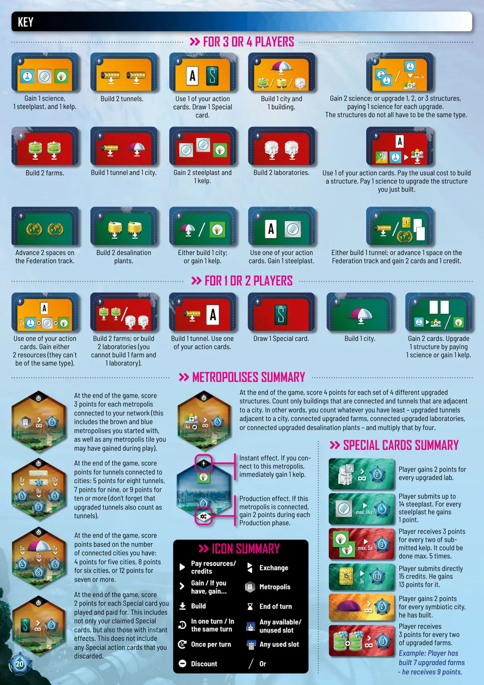
📝 第 20 页 AI 机翻对照（点击展开）
使用1张你的行动卡。支付常规费用建造一个结构。支付1点科学来升级你刚刚建造的结构。
获得2点科学；或升级1、2或3个结构，每次升级支付1点科学。这些结构不必是相同类型。
建造1条隧道；或在联邦轨道上前进1格并获得2张卡牌和1点信用。
游戏结束时，为每个与你网络相连的大都市计分3分（这包括你开始时拥有的棕色和蓝色大都市，以及你在游戏过程中可能获得的任何大都市板块）。
游戏结束时，为与城市相连的隧道计分：8条隧道5分，9条7分，或10条及以上9分（不要忘记升级的隧道也计入隧道）。
游戏结束时，为每组4种不同升级结构计分4分。只计算连接的建筑和与城市相邻的隧道。换句话说，你计算你最少的数量——与城市相邻的升级隧道、连接的升级农场、连接的升级实验室或连接的升级脱盐厂——然后将该数量乘以四。
游戏结束时，为你已使用并支付费用的每张特殊卡计分2分。这不仅包括你声明的特殊卡，也包括那些具有即时效果的卡。这不包括你弃置的任何特殊行动卡。
玩家每拥有2个升级农场获得3分。
示例：玩家建造了7个升级农场 - 他获得9分。
玩家直接提交15点信用。为此他获得13分。
玩家每拥有1个共生城市获得2分。
玩家每拥有1个升级实验室获得2分。
玩家最多提交14点钢塑。每提交1点钢塑他获得1分。
玩家每提交2点海藻获得3分。最多可进行5次。
游戏结束时，根据你拥有的连接城市数量计分：5个城市4分，6个城市8分，或7个及以上12分。
获得1点科学、1点钢塑和1点海藻。
建造2条隧道。
使用1张你的行动卡。抽取1张特殊卡。
建造1个城市和1个建筑。
建造2个农场。
建造1条隧道和1个城市。
获得2点钢塑和1点海藻。
建造2个实验室。
在联邦轨道上前进2格。
使用1张你的行动卡。获得2点资源（它们不能是相同类型）。
建造2个脱盐厂。
建造2个农场；或建造2个实验室（你不能建造1个农场和1个实验室）。
建造1个城市；或获得1点海藻。
建造1条隧道。使用1张你的行动卡。
使用1张你的行动卡。获得1点钢塑。
抽取1张特殊卡。
建造1个城市。
获得2张卡牌。通过支付1点科学升级1个结构，或获得1点海藻。
ą 适用于3或4名玩家
适合 1 或 2 名玩家
大都会概览
特殊卡牌概览
关键
即时效果。如果你连接到这个大都会，立即获得 1 海藻。
生产效果。如果这个大都会已连接，在生产阶段期间获得 2 分。
支付资源/信用点
交换
获得/如果你拥有，获得...
大都会
建造
回合结束
在一个回合内/在同一回合内
任何可用的/未使用的槽位
每回合一次
任何已使用的槽位
折扣
或